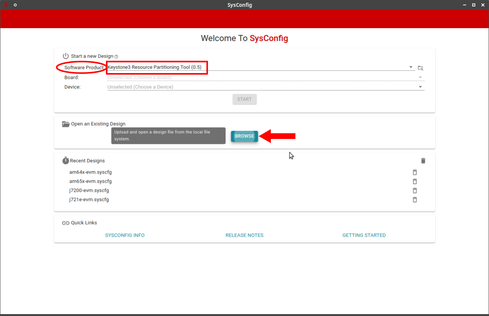
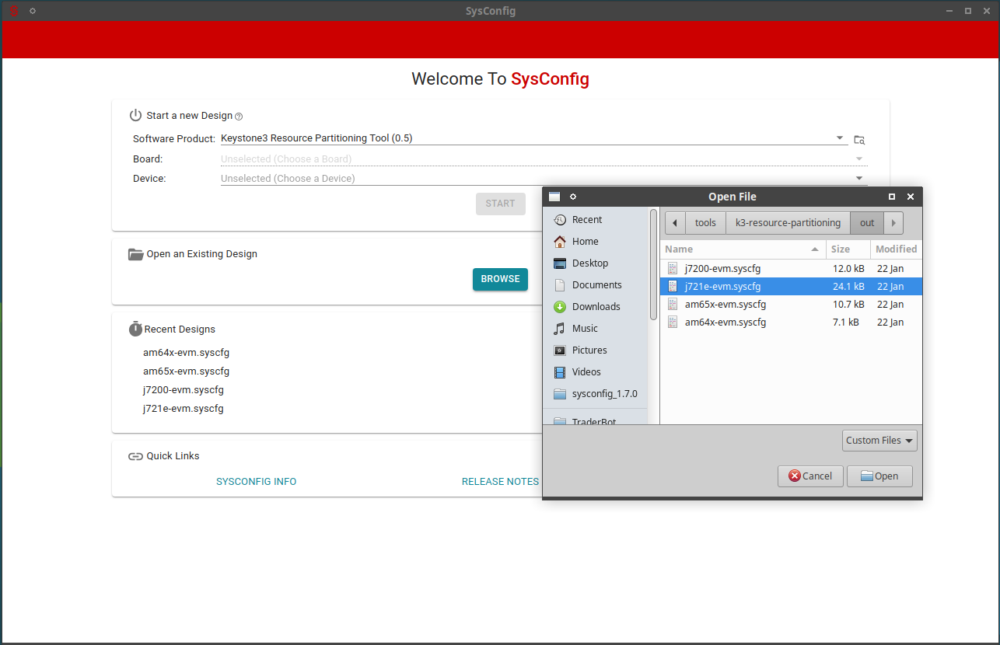

4.1.15. K3 Resource Partitioning Tool¶
Keystone3 Resource Partitioning tool is used for partitioning various system level resources to different software components in a multi core SoC. This tool is based on Texas Instrument’s SysConfig tool.
Typical usage for this tool is for system integrator, where one would be able to partition various resources across different software components. These resources include DMA channels, NAVSS rings, proxies, interrupts, etc. Apart from this, the tool supports configuration of Quality of Service (QoS) and firewall parameters which helps in ensuring partitioning of peripheral devices across different software components.
4.1.15.1. Getting started¶
To start using this tool, follow these instructions:
Download the SysConfig tool from SysConfig release download link
Install the sysconfig tool and note the path where it is installed.
Go to the k3-respart-tool packaged in the SDK installation
Run the setup script
./scripts/setup.py -s /path/to/sysconfig/installationto setup the SysConfig tool.Open the SysConfig tool GUI from the desktop shortcut and select the software product by navigating to the path where the k3-respart-tool is available.
Lastly, click on Browse button to open existing design for the platform that you are interested in. Navigate to the out/ directory and you will find baseline files for your platform.
Use this as the starting point for any customization. We do not recommend you to start from scratch, always load the baseline file out/XYZ-platform-name.syscfg
{kind=link}
{kind=link}
Note
For devices that are not yet officially supported by the latest SysConfig tool, K3 Resource Partitioning tool may provide patch files to support the device in SysConfig.
Run the sysconfig-deviceData-update script
./scripts/sysconfig-deviceData-update.sh <soc>
--sysconfig_dir=/path/to/sysconfig/installation to patch the SysConfig tool.
4.1.15.2. Usage¶
Once you have loaded the product in the SysConfig, and opened the baseline file, you can accomplish following things.
4.1.15.2.2. Review resource allocation¶
At any point, user can review the current resource allocation done by the tool. Select the pane Resource Allocation Table from the three dots shown at the top right corner of the tool. Here, it presents an HTML table which shows the exact range of resources allocated for each host. Each column describes the resource ranges assigned for a certain host. Each row describes how different hosts consume the given resource.
4.1.15.2.3. QoS configuration¶
Note
Currently the generated QoS files cannot be integrated into u-boot directly. The QoS support in u-boot is not added officially.
This module allows to generate the data required for configuring CBASS QoS endpoints. QoS configuration includes two types of parameters. Few parameters are used for tuning the performance of the DMA transactions in the interconnect, and others are used for setting up the IOMMU paths for the masters. For each device, there are multiple master ports using which, DMA requests are made. Each device is capable of driving different values of channel_id along with the DMA request. For every channel, a unique QoS configuration can be programmed.
In the GUI, User should select a device, choose the endpoints, and select a list of channels for which QoS should be programmed. Note that it is possible to add multiple instances of QoS module with same device as long as the endpoints and channels do not overlap. The tool auto generates a simple address-value pair data structure in the qos-config.c output file. This can be used by any software (typically bootloader) to program all the QoS settings.
4.1.15.2.4. Firewall configuration¶
Note
Currently the generated firewall files cannot be integrated into u-boot directly. The firewall support in u-boot is not added officially.
This module allows to generate the data required for firewall configuration. This is very much useful to ensure peripheral partitioning across CPU cores. User can describe if a certain peripheral needs to be accessible ONLY from a list of certain hosts. Each peripheral is protected by a set of firewalls. User can select what all firewalls need to be programmed. Each firewall has different numbers of regions available. The region describes the address range where the filter rules are applicable. Each region can be programmed to define access rules for upto 3 permission slots. Multiple CPUs can have the same priv_id and this would means one slot should be sufficient. The permission slot describes if a transaction from a CPU core with selected priv_id is allowed or not. User can define this for different values of security, privilege level and transaction types. e.g. allow Secure writes, Secure reads, but do not allow non secure writes from A72 to MMC.
By default, the tool will automatically set the required start/end addresses to be configured in the region, optionally allowing the user to define custom region if required. Also, the tool allows to select a host_id and populates the priv_id automatically. Using these data, it generates an array of data TISCI message data structure that can be directly passed to SYSFW for firewall configuration.
4.1.15.2.5. Generating output files¶
This tool generates different files which have the RM board config data, QoS configuration and firewall configuration. Following table describes how to use these files:
| Filename | Used by | Output destination | Comments |
|---|---|---|---|
| rm-cfg.c | k3-image-gen | soc/<soc>/<profile>/ | e.g. - k3-image-gen/soc/j721e/evm/rm-cfg.c |
| tifs-rm-cfg.c | k3-image-gen | soc/<soc>/<profile>/ | e.g. - k3-image-gen/soc/j784s4/evm/tifs-rm-cfg.c |
| sysfw_img_cfg.h | k3-image-gen | soc/<soc>/<profile> | e.g. - k3-image-gen/soc/j721e/evm/sysfw_img_cfg.h |
| <soc>-qos-config.c | U-boot | Not yet supported | |
| <soc>-qos-config.c | SBL | Not yet supported | |
| <soc>-firewall-config.c | U-boot | Not yet supported | |
| <soc>-firewall-config.c | SBL | Not yet supported | |
| sciclient_defaultBoardcfg.c | PDK sciclient | packages/ti/drv/sciclient/soc/V<X>/ | e.g. - pdk/packages/ti/drv/sciclient/soc/V1/sciclient_defaultBoardcfg.c |
| sciclient_defaultBoardcfg_rm.c | PDK sciclient | packages/ti/drv/sciclient/soc/V<X>/ | e.g. - pdk/packages/ti/drv/sciclient/soc/V1/sciclient_defaultBoardcfg_rm.c |
4.1.15.3. Troubleshooting¶
- If you get an error like No product with name “K3-Respart-Tool” and version 0.5 found, Most likely you have missed the step to select the software product.
- If you are not able to see the HTML table and getting error ommitted HTML, Most likely you may have missed / failed to run the setup script.
- If you see error XYZ is not generated when configuration errors exist, It means your resource allocation has few errors. Please adjust the allocation to fix the errors and then you can generate the output files.
4.1.15.4. Developer notes¶
This section is useful only for those willing to modify the tool. Some of the files may not be available in the SDK. Ignore this section if you do not have the additional files required to generate the backend data.
4.1.15.4.1. Directory structure¶
- .metadata/product.json - This file describes all the components that need to be loaded by the SysConfig tool. It also describes the supported platforms. product.json describes the components and the components describe the list of modules and templates that are applicable for the selected device.
- modules - This contains the UI module definition for different configurables, their grouping, organization, and the JavaScript files for handling onChange events and validations.
- templates - This contains the xdt files which describe the output file formats and small code snippets to generate the data using templates. It also has few views to describe the data in a more visual format like a Markdown table or HTML table.
- scripts - These are the JavaScript files for parsing different input data files which generate the SoC specific JSON objects for the usage in the modules. It also implements few utility functions which are frequently called by modules and templates.
- data - This contains the JSON objects that the tool uses to populate the UI items with SoC specific data. Many of these are auto generated using the parsing scripts.
- deviceData - This contains SysConfig patch files for devices that are not yet officially supported in the SysConfig Tool.
4.1.15.4.2. Updating the device data¶
This tool needs lot of hardware and software data to present the GUI and to allocate resources. Majority of this data is auto generated using SoC JSON files, System firmware public documentation, etc. Most users do not need to update this data. This is required only when adding support for a new SoC, migrating to new SYSFW version or migrating to new SoC JSON, etc.
Make sure to add symbolic links to the appropriate repositories as shown below: Do this ONLY if you want to update the data for SysConfig tool If you do not have the system firmware code, then probably you do not need to do this.
dir=`git rev-parse --show-toplevel`
ln -s <path/to/system firmware repo> $dir/../system-firmware
ln -s <path/to/system firmware autogen repo> $dir/../system-firmware
There is a utility script scripts/generate-data.sh [SOCNAME | all] to generate
all the required JSON objects for selected SoC or for all of them.